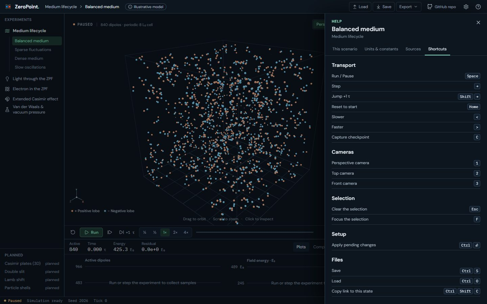
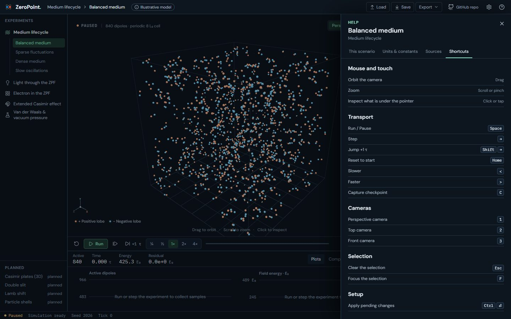
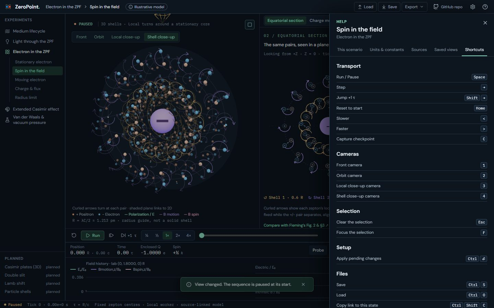
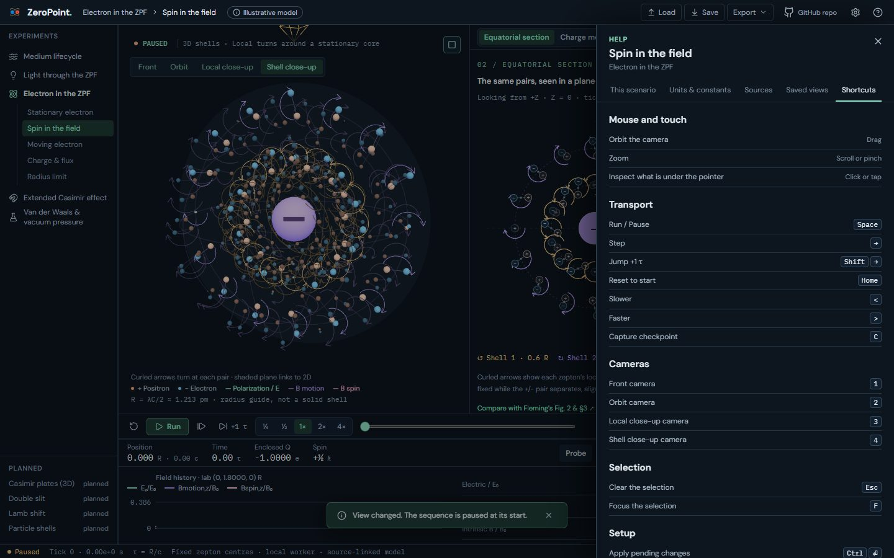

UI 19g: The orbit hint moves to Help: before and after
The one-time orbit hint on Medium's canvas now has a permanent home (plan §05 C): Help › Shortcuts in Medium, Light and Electron starts with a Mouse and touch section: Drag to orbit, Scroll or pinch to zoom, Click or tap to inspect.
Real screens: "before" runs the layer below, and "after" runs this layer. Click an image to open it at full size. Regenerate with node scripts/compare-screens.mjs --before ../19f-debug-telemetry --out docs/ui-previews/19g-orbit-hint-help --set shortcuts --title 'UI 19g: The orbit hint moves to Help' --description 'The one-time orbit hint on Medium'\''s canvas now has a permanent home (plan §05 C): Help › Shortcuts in Medium, Light and Electron starts with a Mouse and touch section: Drag to orbit, Scroll or pinch to zoom, Click or tap to inspect.'.
Medium · Help › Shortcuts




Electron · Spin: Help › Shortcuts



